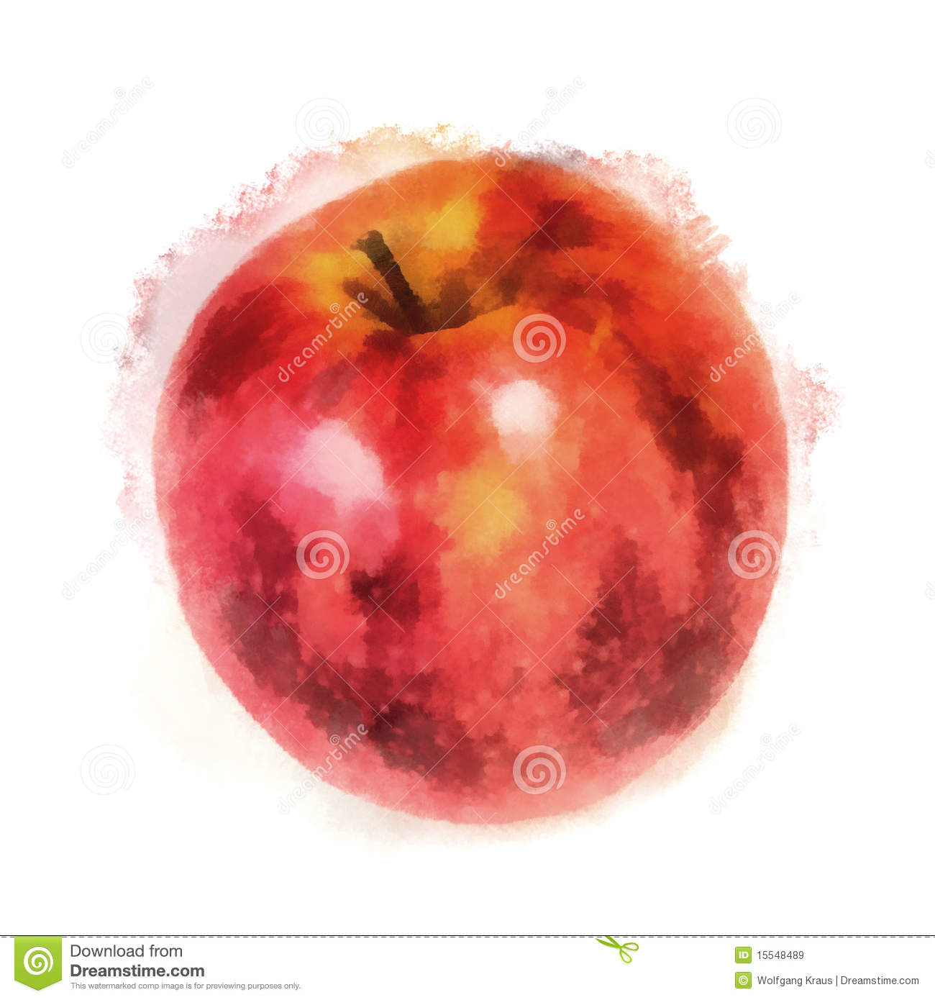

 Image result for introduction of apple fruit The apple tree (Malus pumila, commonly and erroneously called Malus domestica) is a deciduous tree in the rose family best known for its sweet, pomaceous fruit, the apple. It is cultivated worldwide as a fruit tree, and is the most widely grown species in the genus Malus. ... Apple trees are large if grown from seed.
This property is used to add rounded borders to an element:
Normal border
Round border
Rounder border
Roundest border